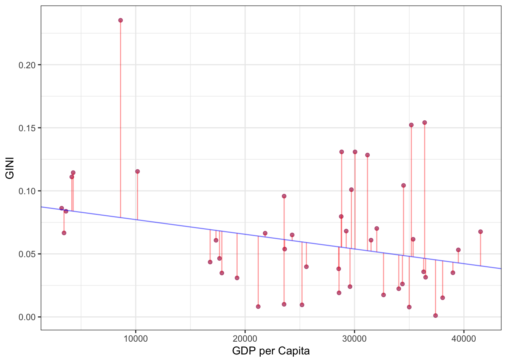

Eurostat EDA
Eurostat EDA
In this paper we are going to present an explanatory data analysis of different statistics of selected European countries. We are more specifically going to analyze the European countries Austria (AT), Belgium (BE), Bulgaria (BG), Croatia (HR), Italy (IT), Serbia (RS), and Sweden (SE).
The paper will consist of four parts (assignments), where in the first part we will explore sub-national GDP and regional inequity in our selected countries. For this part we will use data collected from Eurostat. The data for the first part of the paper consists of GDP and population statistics for the years 2000 – 2020, on a sub-regional level i.e., at NUTS 3 level. NUTS (Nomenclature of territorial units for statistics) is the geographical nomenclature subdividing the economic territory of countries in the European Union. These levels consist of NUTS 1, 2 and 3, with 3 representing the smallest territorial units in a country (Glossary, 2021). The remaining parts of this paper i.e., 2, 3 and 4, will be explained continuously and gradually when we eventually get to them later in the paper.
Sub-National GDP
To start our analysis of sub-national GDP and regional inequity for our selected countries we must, as mentioned, collect data from Eurostat. We download population by broad age group and sex, as well as gross domestic product at current markets prices, at NUTS 3 level (Population on 1 January by Broad Age Group, Sex and NUTS 3 Region, 2022) (Gross Domestic Product (GDP) at Current Market Prices by NUTS 3 Regions, 2022). After we have added our two datasets to our RStudio project, we can calculate GDP per capita at the NUTS 3 level for the separate countries. This is achieved with dividing the GDP on the number of population figures, and can be presented with the following formula:
\[ y_i=GDP_i/population_i \]
Looking at the GDP per capita for all countries in the dataset in Table 1, we find that the difference in population from min to max is big. The difference between Median and Mean is also relatively big witch can indicate that some of the biggest regions has much larger amount of population then the rest and therefore affects the mean and pulls it higher. The fact that the 3rd quartile is just a few thousands away from the mean amplifies our suspicion that we have some outliers with a very high population compared to the rest.
Its reason to believe that high population equals high GDP based on the fact that it is more people that contributes to the GDP. However, this can not be applied in every circumstances. For example Monaco with a population in 2020 of just above 39.000 (Monaco Population (2022) - Worldometer, n.d.) had a GDP on 6.25 billion USD the same year versus Burundi with a GDP on 3.22 billion (GDP (Constant 2015 US$) - Burundi, Monaco | Data, n.d.) and a population just above 11.89 million (Burundi Population (2022) - Worldometer, n.d.). The GDP per capita gives us a more accurate measure. in the model above we can see that its a big difference in GDP per capita in each region, this can be caused by a population or a cluster with rich/poor individuals.
We also had some NA values witch we chose to take out of the dataset. NA values may come from the fact that Population or the GDP was not measured this year or was not available when the dataset was made.
In the plot above we have taken out the countries that belongs to our selection - Austria (AT), Belgium (BE), Bulgaria (BG), Croatia (HR), Italy (IT), Serbia (RS) and Sweden (SE) - and added them in to a time series from year 2000 - 2020 (X-axis) to compare the evolution of GDP per capita (Y-axis) over the given time period. The data is found and downloaded from Eurostat (Statistics | Eurostat, n.d.).
Seven out of eight countries we where given was available for download trough Eurostat, the country witch we are missing is Bosnia and Herzegovina.
From the GG plot we can see that none of the countries have data from the whole time frame, some are missing data from the first years and others are missing from the last years. Serbia only have data from around 2017 to 2019. This might come from the fact that Serbia became an independent republic in 2006 and for that reason has not been collecting og establishing much info around GDP (Serbia, n.d.).
The country´s with the highest GDP per capita is Belgium and Sweden, where both countries has experienced growth in GDP per capita over time. Sweden also has had the biggest growth in GDP Per capita compared to the other countries.
From the graphs, the three countries with highest GDP per capita had a noticeable decline around 2008, which is related to the financial crises at this time. Sweden also experiences the largest dip around this time (Economic Recovery of EU Regions After 2008, n.d.)
Four of the five countris on the bottom also has experienced growth, just not as significant as Sweden and Belgium. Austria had a big downfall in GDP per capita from year 2000 to 2001, but has had a stable growth since then.
Bulgaria GDP
The table shows the GDP per capita on a NUTS3 level for Bulgaria alone. One Region sticks out from the rest (BG411) with a higher GDP per capita and a higher growth from 2000 to 2020, almost reaching a GDP per capita on 20 000. BG411 is a Region in Sofia, capital city of Bulgaria. The reason for this might be because of a better work situation in Sofia with less unemployed people and more business going around (Statistical Regions in the European Union and Partner Countries, n.d.).
From year 2000 to around 2005 the other regions had around the same GDP per capita with a similar growth. The following years after 2005 some of the regions have split a bit from others and had a faster growth which laded them to surpass a GDP per capita over 5000 in 2019, some reaching a GDP per capita over 7500 by year 2019.
| Region | GDP_capita |
|---|---|
| BG411 | 11904.952 |
| BG344 | 5186.760 |
| BG331 | 5048.607 |
Using 2010 as a base point which is after the financial crises, we found that the three regions with highest GDP per capita is BG411 (Sofia), BG344 (Stara Zagora) and BG331 (Varna), all major cities in Bulgaria. These Regions also managed to maintain a good growth in GDP per capita through the years till 2019 (Statistical Regions in the European Union and Partner Countries, n.d.)
| Region | GDP_capita |
|---|---|
| BG325 | 2555.374 |
| BG311 | 2701.086 |
| BG342 | 2734.754 |
The three regions with lowest GDP Per capita is BG325 (Silistra), BG311 (Vidin) and BG342 (Silven) where BG325 and BG311 both are cities located north in Bulgaria. BG342 is a larger city located more in the middle of Bulgaria a bit southeast (Statistical Regions in the European Union and Partner Countries, n.d.)
Belgium GDP
In Belgium the table shows that it is more variance in GDP per capita from region to region. Most regions have had somewhat of a similar growth trough year 2000 until 2018 before a dip from 2018 to 2020. The dip could be explained by the government formation that started to take place in 2018. We can see that BE100 has a noticeable higher GDP per capita then the closest region. Region BE100 includes the capital city of Belgium, Brussel (Brzozowski, 2020) (Statistical Regions in the European Union and Partner Countries, n.d.).
| Region | GDP_capita |
|---|---|
| BE211 | 41353.08 |
| BE241 | 39306.81 |
| BE234 | 38714.12 |
The three regions with the largest GDP in Belgium in 2010, after the financial crises, is BE100 (Brussel), BE211 (Antwerpen) and BE241 (Halle-Vilvoorde) (Statistical Regions in the European Union and Partner Countries, n.d.) . Brussel being the capital and Halle-Vilvoorde being a region located around Brussel indicates that it is generally lower unemployment and more business in this area. Antwerpwen is located more north in Belgium is a major city when it comes to seaports. Its also well known for its diamond industry (Antwerp | History, Diamonds, Port, & Points of Interest | Britannica, n.d.)
| Region | GDP_capita |
|---|---|
| BE334 | 15211.81 |
| BE353 | 15727.11 |
| BE345 | 15796.64 |
The three regions with the smallest GDP per capita in Belgum by 2010 was BE334 (Waremme), BE353 (Philippeville) and BE345 (Virton) (Statistical Regions in the European Union and Partner Countries, n.d.) . Philippeville and Virton is both located north and border to France. Waremme is located more mid-east
Austria GDP
Austria has a more aggregated graphs, even though it is a gap between highest and lowest, the GDP per capita development is more equal. We can see that some regions has experience a bit more ups and downs trough the years and most regions has a dip around the financial crises in 2008.
| Region | GDP_capita |
|---|---|
| AT312 | 46232.41 |
| AT323 | 45690.26 |
| AT221 | 41579.52 |
AT312 (Linz-Wels), AT130 (Wien) and AT323 (Salzburg) is the Regions with the highest scoring GDP per capita in 2010. They have held a similar pattern and GDP per capita from 2000 to 2020 (Statistical Regions in the European Union and Partner Countries, n.d.)
| Region | GDP_capita |
|---|---|
| AT125 | 18212.92 |
| AT111 | 19680.49 |
| AT313 | 20272.85 |
The three lowest scoring regions are AT125 (Weinviertel), AT111 (Mittelburgenland) and AT313 (Mühlviertel) witch all is more greener areas. Both Weinviertel and Mühlviertel are located north and boarders to the Czech Republic while Mittelburgenland southeast and boarders to Hungary (Statistical Regions in the European Union and Partner Countries, n.d.) .
Croatia GDP
The graphs for Croatia shows that the financial crises also had an impact on the GDP per capita in 2008 until 2012/2013 before the GDP per capita startet do climb again before it dips again around 2018. We can see that region HR036 and HR031 has GDP per capita that lays a bit higher than the other regions for the most part.
However, region HR037 and HR032 also had some good years. Croatia has also fewer regions with available DGP data on a nuts3 level then the other countries.
| Region | GDP_capita |
|---|---|
| HR036 | 13287.36 |
| HR031 | 12920.32 |
| HR037 | 10320.23 |
The topvthree regions in 2010 measured by GDP per capita is HR036 (istarska županija), HR031 (Primorsko-goranska županija) and HR037 (dubrovnik-neretva) (Statistical Regions in the European Union and Partner Countries, n.d.). istarska županija is big on processing industry, tourism and trade (Economy, n.d.-a).
Dubrovnik-Neretva is the capital of Croatias and are also big on tourism, but also makes a living out of hospitality industry, agriculture and maritime indisutry (Economy, n.d.-b).
| Region | GDP_capita |
|---|---|
| HR034 | 7877.665 |
| HR032 | 7971.199 |
| HR035 | 8363.857 |
On the other side, the three regions with lowest GDP per capita by 2010 is HR034 (Šibensko-kninska županija), HR032 (Ličko-senjska županija) and HR035 (Splitsko-dalmatinska županija). All are located south in Croatia by the coast and boarders to Bosnia-Hercegovina (Statistical Regions in the European Union and Partner Countries, n.d.) .
Italy GDP
Italy consists of many NUTS3 Regions. We piced out only the 500 biggest and used them in our plot. Some of the regions in the plot don’t hav GDP per capita data for the whole-time frame. We can see that is a big difference in the Regions at the bottom and the one on top. The top Region ITC4C (Milano) also stands out from the rest with a higher GDP per capita at all times between year 2000 and 2020 (Statistical Regions in the European Union and Partner Countries, n.d.) . We can also see that it is some what of a dip around 2011 too. This could come from Sovereign Debt (Romano, 2021) and later on tension between Russia and Ukraine witch impacted exports (Ewing and Pianigiani, 2014).
| Region | GDP_capita |
|---|---|
| ITC4C | 52696.50 |
| ITI43 | 39391.67 |
| ITH55 | 36686.77 |
TC4C (Milano), ITH10 (Bolzano-Bozen) and ITI43 (Rome) are the three regions in Italy with the highest GDP per capita by 2010 (Statistical Regions in the European Union and Partner Countries, n.d.) . Milano are one of the biggest fashion cites in the world, and arranges “Fashion-week” every year witch draws visitors from all over the world (Milan | History, Population, Climate, & Facts | Britannica, n.d.). Bolzano-Bozen is a rich city and focus on quality agriculture, producing wine, fruit and dairy products. Tourism is also a source of income for the city (Bolzano - Bozen, Trentino-Alto Adige, Italy, n.d.). Rome is a powerful economic force in Italy and are the center for politics. The main industry in Rome are service (Economy In Italy, n.d.).
| Region | GDP_capita |
|---|---|
| ITG14 | 14502.91 |
| ITF48 | 14831.01 |
| ITF64 | 15105.24 |
Out of the 500 Regions we picked out, ITG4 (Agrigento), ITF48 (Barletta-Andria-Trani) and ITF64 (Catanzaro) had the lowest GDP per capita in 2010 (Statistical Regions in the European Union and Partner Countries, n.d.) . All three regions are located South in Italy. Agrigento´s economic is focused around Sulfur and potash mining, tourism and agriculture (Agrigento | Italy | Britannica, n.d.). Barletta-Andria-Trani have cities such as Barletta where the economy comes from producing cement and other similar products (Where Is Barletta, Barletta-Andria-Trani, Italy on Map Lat Long Coordinates, n.d.). The lowest scoring region, Catanzaro, have farming as one of their main industries (Calabria | Region, Italy | Britannica, n.d.).
Serbia GDP
As mentioned earlier, Serbia only provides us GDP data from 2017-2019. Looking at the graphs, 2018 seems to be a breaking point for the GDP per capita where some regions experiences growth, while other experiences a decline in GDP Per capita.
| Region | GDP_capita |
|---|---|
| RS221 | 5088.925 |
| RS214 | 4952.876 |
| RS226 | 4916.722 |
The three regions with the highest GDP per capita in Serbia, here measured for year 2017 was RS221 (Borska oblast), RS214 (Moravička oblast) and RS226 (Pirotska oblast) (Statistical Regions in the European Union and Partner Countries, n.d.).
| Region | GDP_capita |
|---|---|
| RS228 | 2534.092 |
| RS227 | 2609.823 |
| RS224 | 2753.131 |
The thre lowest scoring regions in Serbia in 2017 was RS228 (Pčinjska oblast), RS227 (Pirotska oblast) and RS224 (Jablanička oblast) (Statistical Regions in the European Union and Partner Countries, n.d.)
Sweden GDP

The Swedish statistics show Stockholm as superior to the other regions both in GDP, GDP per capita and population. As expected from the capital of Sweden. This is where the main industrial clusters are located, which draws population and GDP higher. What is noteable her is that the neighbour region SE122 (Sódermanland) which borders Stockholm, is second to last at the bottom with half the GDP per Capita compared to Stockholm. We belive this has a connection to the employment rates and there would be a bigger atraction for workers to employ in stockholm. Another interesting bit about the swedish GDP per capita is that their smallest region by population (2019) is Gotland (SE214) with 59 249, comparing Gotland to Stockholm there is almost 40x more people in Stockholm (2 344 124). The GDP is 2050,4 against 151 284,4 which is aprox a 74x difference in favor Stockholm. This makes the GDP per capita 34 603 against
Stockholm´s 64 537, less then a 2x difference (Statistical Regions in the European Union and Partner Countries, n.d.).
| Region | GDP_capita |
|---|---|
| SE332 | 43768.31 |
| SE232 | 38740.05 |
| SE322 | 37522.62 |
As previously we chosed 2010 as point, where the recovery from the financial crisis was in route. Stockholm had a GDP per capita of 56036,50 at that time while Norrbottens came in second with 43768,31 and Vastra Gotaland at third with 38740,05.
| Region | GDP_capita |
|---|---|
| SE214 | 30273.33 |
| SE311 | 31466.64 |
| SE122 | 31673.87 |
The regions with the lowest GDP per capita in 2010 were fairly close, and little that differed them from eachoter aswell as some other regions.
10 regions with highest GDP
Comparing the regions with the highest GDP per capita between the countries, we see BE100 (Brussels) with a GDP that was rising well above 70 000 before the corona pandemic, and was slightly lower than 70 000 in 2020.From this dataset among the highest gdp per capita regions, it was only Brussels and Antwerp that had data available until 2020. AT323 which is Salzburg, more concretely Salzburg und Umgebung [@NUTSStatisticalRegions2022], had a population of 366´866 in 2019, which is a great difference compared to SE110 - Stockholm with a population of 2´344´124 in 2019. A considerable difference, showing how the GDP per capita is fairly close to eachother even though the aforementioned population difference.
10 regions with lowest GDP
We want to clarify that there was insufficent data when it came to Bosnia & Hercegovina, which could have been a contender for the lowest GDP per Capita in some regions. Same goes for Serbia, where we chose to withold them from this top 10 list because a lack of information pre- 2017.
The 10 regions with the lowest GDP per capita shows us they are all located in Bulgaria. Eight of the lowest GDP per capita regions are located in Nuts 1 - BG3 (Northern & Eastern Bulgaria). BG 3 is divided into 4 Nuts 2 regions : (BG31)Northwestern, (BG32)Northern Central, (BG33) Northeastern, (BG34) Southeastern. BG31 has three provinces that are on our top 10list; Vidin Province(311), Montana Province(312) and Pleven Province(314). It is clear to see that the pattern for where the GDP per capita is low, is around the Eastern areas, Northeast, central east and southeast. These are also some of the areas that are furthest away from the Capital. The interesting part of this diagram is that around 2004, the GDP per capita of the regions were fairly aligned with eachother at 2000, before they started ascending and increasing the gap.
Regional inequity
Regional inequity refers to skewed distribution and the differences in quality of life, wealth and general living standards among individuals in a region. To determine regional inequity for our selected countries, we calculate the population-weighted GDP Gini coefficients (\(GINIW_j\)). The coefficients can have values ranging from 0 to 1. The value 0 corresponds to no inequity, and the higher the coefficient, the higher inequity appears in the respective country/ region. The value 1 corresponds to absolute inequity. The coefficients are calculated by the following formula:
\[ GINIW_j=\frac{1}{2 \bar{y_j}} \sum_{i}^{n_j}\sum_{l}^{n_j}\frac{p_i}{P_j} \frac{p_l}{P_j} |y_i-y_l| \]
Code
kable(summary(GDP_Per_Capita %>%
select(GINI_NUTS2)))| GINI_NUTS2 | |
|---|---|
| Min. :6.130e-06 | |
| 1st Qu.:3.642e-02 | |
| Median :6.392e-02 | |
| Mean :7.356e-02 | |
| 3rd Qu.:1.068e-01 | |
| Max. :2.352e-01 |
The summary statistics above give us the descriptive figures for all our selected countries combined, throughout the whole period of 2000 - 2020. Based on the statistics, we can note that the lowest coefficient is equal to 0, meaning that there are some regions where inequality is absent. We can also observe that the highest inequality throughout the entire period is 0.235. The mean of the Gini coefficients are 0.071.
| GINI_NUTS2 | |
|---|---|
| Min. :0.001086 | |
| 1st Qu.:0.038156 | |
| Median :0.066395 | |
| Mean :0.074680 | |
| 3rd Qu.:0.111032 | |
| Max. :0.235240 |
Based on this data we see that all of the countries are collectively within adequate equality or better. where the min, 1st q, median and mean are all below the 0,1 point. The max is at 0,23524 which you can see on the graphs under, and is within the Bulgarian regions. Seeing how all of the top 10 regions that scored the lowest were from Bulgaria, it does not come of as a shock, that they also have the highest GINI score. The capital of Bulgaria, Sofia, has more than twice of the average GDP per capita of the remaining regions, and for some of the lower regions, more than 5times the amount.
Density distribution of all coefficients in all selected countries. We can observe that the density plot above matches our summary statistics of the coefficients. The density is at peak, at aproximately 0,03 GINI, reaching almost 10 in density. this signalizes that there is adequate equality between regions.
In this plot we see 4 countries touching the 0,00 GINI point, symbolizeing perfect equality for some regions, with one stretching beyon 0,2 going towards adequate equality. Further on we see Sweden being the country that scored the best with having the biggest density closest to 0,00 and we can with that confirm Sweden being the country that is closest to perfect equality between its own regions.
A closer look at Sweden and we see their regions and how their GINI index has been throughout the years.
Comparing this plot to the one above you see there is a bigger diversity and inequality compared to Sweden. This is still well within limits of adequate equality, and only one region that crosses the 0,1 line.
The Bulgarian GINI plot which is the one with the biggest spread between our three plots, where the range is from 0,04 to 0,235. This visualization shows us how the plot excelled during the years and created a bigger gap with the years. The overall mean also increased with the years implying they are moving further away from perfect equality.
Conclusion
In conclusion our regions do have some differences as well as similarities, some of the patterns we noticed were the capitals of the respected countries, were usually on top of the GDP per capita compared to their regions. This for several reasons as we mentioned earlier, how the industrial clusters usually are located there and attract more workers. Further on when we went deeper into detail, we saw the GINI coefficients of the countries and their regions, we can concluded that they were all within the limit of adequate equality, while some were close and even on perfect equality.
Growth and inequity
For the second part of this paper we will explore growth and inequity for our subset of selected countries. This part will mainly consist of regression analyses, where we will start with an analysis of the effect of regional development \(y_j\) on the regional inequality \(GINIW_j\). Later in this part we will estimate a multiple linear regression model with other variables that might determine inequity, which we will explain in more detail later. For the sake of simplicity, we will only concentrate on one year in these analyses, the year 2010.
One can argue that regional development has a significant connection to regional economic growth. GDP per capita is widely used by economists to gauge the health of an economy. According to the United Nations Statistics Division the purpose of the GDP per capita indicator is to “…measure the level of total economic output relative to the population of a country” (Division, 2007). It is further explained that GDP per capita can be used as an indicator to measure the allocation of how total production of a country/ region can be shared among the population. GDP per capita is thus a powerful simple indicator of economic growth, and it can be argued that it can also be used as an indicator for development in inequality.
The effect of regional economic development on regional inequality
As mentioned in the introduction of this part of the paper, we will carry out a simple regression model and explore the effect of regional economic development \(y_j\) on regional inequality \(GINIW_j\). We will do this in order to gain an understanding of the connection between economic growth indicators such as GDP per capita and inequality might have. We will explore if higher GDP per capita may lead to less or greater inequality, and also gain an understanding to what extent these variables are related.
The simple regression model for this part is structured in the following way:
\[ Y_i = β_1 + β_2X_i + ε_i \]
- \(Y_i\) as the dependent/ explained variable
- \(X_i\) as the independent/ explanatory variable
- \(β_1\) as the intercept/ constant
- \(β_2\) as the slope coefficient
- \(ε_i\) as the error/ disturbance term
| AT | BE | BG | HR | IT | SE | CC | |
|---|---|---|---|---|---|---|---|
| GDP_capita_NUTS2 | -0.000 | -0.000 | 0.000 *** | 0.000 *** | 0.000 | -0.000 * | |
| (0.000) | (0.000) | (0.000) | (0.000) | (0.000) | (0.000) | ||
| const. | 0.144 | 0.128 | -0.019 | 0.115 *** | -0.039 | -0.063 | 0.089 *** |
| (0.111) | (0.059) | (0.012) | (0.000) | (0.023) | (0.066) | (0.015) | |
| N | 8 | 7 | 6 | 2 | 34 | 14 | 71 |
| R2 | 0.043 | 0.151 | 0.974 | 0.000 | 0.330 | 0.119 | 0.064 |
| Note: *** p < 0.001; ** p < 0.01; * p < 0.05 T statistics in brackets. | |||||||
As shown in the regression table, we have the intercepts and slope coefficient of all separate regions of regional economic development (\(X_i\)) on regional inequality (\(Y_i\)) (excluding Serbia (RS) because of insufficient data). In alphabetical order of country codes, the table shows the intercept, slope, number of observations and the coefficient of determination (\(R^2\)) for the different NUTS2 country regions. The last model of the table Countries Combined (CC), is generated from the combined data from all regions regardless of country. We have chosen to ignore observations where GINI = 0, as we believe these values are due to missing data.
The negative slope coefficients of the regression analysis show us that there is a tendency for less regional inequality in Austria and Belgium when regional economic development increases. Using Austria as an example, with the slope coefficient of -0.043, the dependent variable of regional inequality (\(Y_i\)) will decrease with 0.043%, when the independent variable of regional economic development (\(X_i\)) increases by 1%. In contrast, the simple regression analysis show that Bulgaria and Italy have a positive slope coefficients, telling us that inequality actually increases when economic regional development increases. For all the countries combined, we observe a negative slope coefficient of -0.023, implying once again that increase in economic development reduces inequality overall for our subset of countries.
Goodness of fit for estimated regression model
To determine the goodness of fit for the estimated simple regression models in the table above we look at the coefficient of determination \(R^2\). The coefficient of determination tells us how close the data are to the fitted regression line, and represents the quantity of the variance for the dependent variable that is explained by the independent variable. The \(R^2\) can have values ranging from 0 to 1. Should the coefficient as an example be 0.7, this means around 70% of the dependent variable can be explained by the independent variable.
In our case there is one coefficient of determination in our regression analysis in particular, that differs from the others. Looking at the table, it appears that the data of the regions in Bulgaria has an explanatory power of 0.973, meaning that the independent variable of economic regional growth explain the dependent variable of regional inequality to a greater extent and it may seem like there is a strong correlation between these variables. This can be presented in a scatter plot with a fitted line, for the sake of visualization, as shown below. We also observe that the p-value for the slope coefficient p > 0.001, which suggests we can reject the null hypothesis that there is no correlation concerning the dependent and independent variable for the regression analysis of Bulgaria.
For all the countries combined (CC) we have the coefficient of determination of 0.090, i.e. that the independent variable of economic regional growth, explains around 9% of the variance in the dependent variable regional inequality. This can also be visualized with scatter plots as shown below.
Residuals of the model
Further, we want to graphically present the residuals of our model concerning the combined country data (CC). The residuals of the model is the difference between the observed value and mean value (slope coefficient) that the model predicts for that observation (Frost, 2022).

Above we have plotted the residuals for our simple regression model in the scatter plot.
Classical assumptions OLS
Statistical analyses such as ordinary least squares regression (OLS) has underlying assumptions. It is when these classical assumptions are true, that OLS produces the best estimates. There are six classical assumptions for OLS regression. If the first four are fulfilled, our models are unbiased. All six assumptions are listed below:
- Linearity: There must be a linear relationship between the dependent (\(Y_i\)) and independent (\(X_i\)) variables. As shown on our scatter plots with the fitted line, we see that the fitted line represents all plots as good as possible
- Sample variation: There is variation in the independent variable (\(X_i\)).
- Random sampling: There is a random sample from the population of interest. Our data is collected from Eurostat, which is a reliable source in terms of random sampling.
- Exogeneity: The explanatory variable (\(X_i\)) is exogenous, i.e., it is not influenced by any other variables in the explanatory model.
- Homoskedasticity: The error term (\(ε_i\)) has the same variance for each value of the independent variable (\(X_i\)).
- Normality: The population error term (\(ε_i\)) is normally distributed.
Other determinants of inequity
According to the United Nations Statistics Division there are limitations to measuring regional inequity with GDP per capita as an indicator. GDP per capita does not account for or measure the social and environmental costs of production, and other social issues such as politics, education, health care and culture etc (Division, 2007). It may be limited when measuring the level of overall well being in the population. It is therefore appropriate to look at other variables that can may have an impact and connection on regional inequity.
To explore further options to understand what variables that might effect regional inequity in our subset of countries, we have chosen 3 other datasets from Eurostat that we wish to explore further. These are concerning transport infrastructure, education and demographics. More specifically, we will in this part of the paper explore the effect of the number of motor- and railways, percentage of the population with higher education as well as life expectancy on regional inequity in the subset of countries. The analysis will be delimited by the fact we are only exploring the year of 2010, as mentioned previously.
Multiple regression model Austria
| Model 1 | Model 2 | Model 3 | Model 4 | Model 5 | |
|---|---|---|---|---|---|
| Higher.educ | 0.006 | -0.002 | 0.007 | ||
| (0.012) | (0.007) | (0.008) | |||
| Number_of_MWAY_and_RL | 0.000 ** | 0.000 ** | |||
| (0.000) | (0.000) | ||||
| Life.expec | -0.067 * | -0.068 * | |||
| (0.023) | (0.024) | ||||
| const. | -0.011 | 0.007 | 0.041 | 5.553 * | 5.518 * |
| (0.207) | (0.019) | (0.106) | (1.874) | (1.917) | |
| N | 8 | 8 | 8 | 8 | 8 |
| R2 | 0.037 | 0.787 | 0.792 | 0.586 | 0.639 |
| Note: *** p < 0.001; ** p < 0.01; * p < 0.05 T statistics in brackets. | |||||
In this table we have two multiple regression models and three simple regression models. Model 3 and 5 are the multiple regression models, whereas 1, 2 and 4 are simple regression models.
The multiple regression models for Austria show a coefficient of determination \(R^2\) of 0.792 for Model 3 and 0.639 for Model 5, respectively. Model 3 concerns a multiple regression of percentage of the population with higher education and the number of railways and motorways as the independent variables, and the GINI coefficient as the dependent variable. Model 5 also has the percentage of the population with higher education as an independent variable, but has life expectancy as the second independent variable. Both models show significant correlation as the coefficient of determination \(R^2\) > 0.35.
Multiple regression model Belgium
| Model 1 | Model 2 | Model 3 | Model 4 | Model 5 | |
|---|---|---|---|---|---|
| Higher.educ | -0.001 | -0.001 | 0.000 | ||
| (0.003) | (0.003) | (0.004) | |||
| Number_of_MWAY_and_RL | -0.000 | -0.000 | |||
| (0.000) | (0.000) | ||||
| Life.expec | -0.004 | -0.005 | |||
| (0.011) | (0.015) | ||||
| const. | 0.091 | 0.108 | 0.134 | 0.412 | 0.440 |
| (0.100) | (0.049) | (0.123) | (0.861) | (1.108) | |
| N | 7 | 7 | 7 | 7 | 7 |
| R2 | 0.006 | 0.095 | 0.107 | 0.030 | 0.031 |
| Note: *** p < 0.001; ** p < 0.01; * p < 0.05 T statistics in brackets. | |||||
Furthermore, we want to look at how the multiple regression models for Belgium. In this table we see a much lower degree of explanation for the models, than that of Austria. It therefore suggests that the correlation between the independent and dependent variables is not as significant in comparison. A desired condition for correlation in regression models is that the coefficient of determination \(R^2\) is equal to or higher than 0.35, which in these instances they are not.
Alternative functional forms
The third part of this explanatory data analysis paper mainly revolves around alternative functional forms which might fit our data of GDP per capita and Inequity better. This part will also mainly consist of regression analysis, but shall more specifically examine how our data fits when calculating the log of the independent variable \(X_i\) (GDP per capita) and further if polynomial regression reinforces this connection. Like the second, this third part will deal with regions of NUTS2 level in our subset of countries.
Effect of development for different subsets
The first thing we will explore in this third part of the paper is to determine if the effect of development is significantly different for different subset of countries in our data set. To determine this we will create a dummy variable. A dummy variable is a variable used to explain qualitative values in a regression model. Dummy variables usually take binary values, i.e. 0 or 1. We have chosen to use the data of Italy as the dummy variable, considering this is the country with most observations of 2010, and it is therefore the appropriate variable to compare with the rest of the data from all the other countries. We choose to multiply our dependent variable of the GINI coefficient by 10,000, so we get a better visualization of the slope coefficient.
| Italy | All other countries | |
|---|---|---|
| (Intercept) | -391.284 | 1300.325 *** |
| (229.306) | (175.203) | |
| GDP_capita_NUTS2 | 0.035 *** | -0.023 *** |
| (0.009) | (0.006) | |
| N | 34 | 37 |
| R2 | 0.330 | 0.316 |
| FStat | 15.792 | 16.151 |
| PValue | 0.000 | 0.000 |
| Note: *** p < 0.001; ** p < 0.01; * p < 0.05 T statistics in brackets. | ||
As seen from our table we have an appropriate distribution of observations, with Italy having 34 observations and the other countries combined having 37. We also see that the correlation between the dependent and the independent variable for the two regression models, that is the effect of regional economic development (\(X_i\)) on regional inequality (\(Y_i\)), are very similar. For Italy only we have a coefficient of determination of 0.33, compared to the other combined countries of 0.316. Based on this it suggests that the effect of regional economic development is not significantly different for different subsets of countries in our data set. The slope coefficient does however tell us that the effect is negative for Italy, and positive for the other combined countries, i.e. that higher regional development in Italy has the tendency to lead to greater inequality. For the other countries combined this trend is the opposite, that higher regional development decreases inequality.
Alternative functional forms
For this sub-task we will explore alternative functional forms of our previous estimates in the relationship between regional development \(y_j\) on regional inequality \(GINIW_j\). More specifically we will estimate the log of GDP per capita in a linear regression model, and assign this variable as the new determinant of effect on regional economic development \(y_j\). According to Lessmann and Seidel, the level of economic development can be measured by the logarithm of GDP per capita (Lessmann and Seidel, 2017). That is therefore the reason we will use the log of GDP per capita in our new estimates in the linear regression model, and we will determine if this fits our model better.
| AT | BE | BG | HR | IT | SE | CC | |
|---|---|---|---|---|---|---|---|
| log_GDP_capita_NUTS2 | -0.043 | -0.048 | 0.168 *** | 0.074 ** | 0.080 | -0.023 * | |
| (0.107) | (0.059) | (0.014) | (0.023) | (0.066) | (0.009) | ||
| const. | 0.531 | 0.565 | -1.287 *** | 0.115 *** | -0.703 ** | -0.819 | 0.286 ** |
| (1.107) | (0.605) | (0.117) | (0.000) | (0.231) | (0.694) | (0.087) | |
| N | 8 | 7 | 6 | 2 | 34 | 14 | 71 |
| R2 | 0.026 | 0.117 | 0.973 | 0.000 | 0.249 | 0.109 | 0.090 |
| FStat | 0.160 | 0.660 | 143.992 | 10.606 | 1.461 | 6.842 | |
| PValue | 0.703 | 0.453 | 0.000 | 0.003 | 0.250 | 0.011 | |
| Note: *** p < 0.001; ** p < 0.01; * p < 0.05 T statistics in brackets. | |||||||
As we can tell from the descriptive statistics of the regression models where the logarithm of GDP per capita has been assigned as the explanatory variable as compared to our previous simple regression models in part 2, with GDP per capita as the explanatory variable, the coefficients of determination has a slight tendency to be at a lower level. This applies more specifically to the regressions of Austria, Belgium, Italy and Sweden. The regression analysis of all the Countries Combined (CC) however has a slightly better \(R^2\), with the coefficient of 0.09, compared to 0.064 of the previous model. The scatterplot for the regression of the CC with the log of GDP per capita data is shown below.
Furthermore, we would like to present a polynomial regression analysis of our data. In these regressions we will still keep the logarithm of GDP per capita (\(X_i\)) as our explanatory variable. The analysis consists of 2nd and 3rd degree polynomial regressions.
| Simple linear reg | 2nd degree polynomial | 3rd degree polynomial | |
|---|---|---|---|
| log GDP per capita NUTS2 | -0.023 * | -0.111 | 17.862 ** |
| (0.009) | (0.227) | (5.851) | |
| log GDP per capita NUTS2 ^2 | 0.005 | -1.900 ** | |
| (0.012) | (0.620) | ||
| log GDP capita NUTS2 ^3 | 0.067 ** | ||
| (0.022) | |||
| const. | 0.286 ** | 0.698 | -55.540 ** |
| (0.087) | (1.067) | (18.324) | |
| N | 71 | 71 | 71 |
| R2 | 0.090 | 0.092 | 0.204 |
| FStat | 6.842 | 3.454 | 5.738 |
| PValue | 0.011 | 0.037 | 0.001 |
| Note: *** p < 0.001; ** p < 0.01; * p < 0.05 T statistics in brackets. | |||
Comparing the simple linear regression with the polynomial regressions of 2nd and 3rd degree, we observe that the coefficient of determination increases. We can observe in particular that the 3rd degree polynomial regression show a significantly greater degree of explanation with an \(R^2\) of 0.204, compared to 0.09 of the previous estimated model. Polynomial regression is however sensitive to outliers, which seems to be the case for our estimates.
Breusch Pagan Test (Heteroscedasticity)
We will be using the Breush-Pagan test, to test for heteroskedasticity in linear regression models. When doing this test, the goal is to assert wether there is heteroscedasticity or homoscedasticity, which then will tell us wether the results of the regression are reliable or not.
BP
0.9137468 Reading this output shows u a p-value(0.9137) that is above alpha (0.05), stating it is not significant. This gives us the conclusion that the we can keep the null-hypothesis and reject the A-hypothesis, further assuming the residuals of lm20 are homoscedastic.
BP
0.9303437 This output from the second degree polynomial regression shows us similiar data as far as keeping the null-hypothesis and assuming homoscedasticity for the residuals. With a p-value(0.9303) higher than 0.05.
BP
0.1250937 The third BP-test is a third degree polynomial regression showing us a lower p-value (0.1250937), but still within limits, and implying the same outcome as our previous bp-tests. Null-hypothesis stays, and further assuming that the residuals are homoscedatistic.
BP
0.8762755 Our fourth, and second simple regression going through the Breusch Pagan Test, shows us a p-value (0.8762755) above our alpha (0.05) again, implying the residuals are homoscedastistic and our null-hypothesis stays.
We followed through with our given recommendations for how to solve this task of looking for heteroscedasticity, giving us the results as seen above. But we would like to add a note; According to Dr. Nisha Arora, the Breusch Pagan Test assumes heteroscedasticity is a linear function of the independent variables. Where if one would fail to find heteroscedisticity with the Breuch Pagan test, it would not necessarily mean that there is not a nonlinear relation between the error variance and the independent variables. Further it seems to be recommended to use the White Test, where as this test gives us a more flexible functional form that is suited for recognizing a greater amount of patterns for heteroscedasticity. The White Test also lets the independent variables to have a interactive and nonlinear effect on the error variance. Arora (2016) We followed through with our given recommendations for how to solve this task of looking for heteroscedasticity, giving us the results as seen above. But we would like to add a note; According to Dr. Nisha Arora, the Breusch Pagan Test assumes heteroscedasticity is a linear function of the independent variables. Where if one would fail to find heteroscedisticity with the Breuch Pagan test, it would not necessarily mean that there is not a nonlinear relation between the error variance and the independent variables. Further it seems to be recommended to use the White Test, where as this test gives us a more flexible functional form that is suited for recognizing a greater amount of patterns for heteroscedasticity. We followed through with our given recommendations for how to solve this task of looking for heteroscedasticity, giving us the results as seen above. But we would like to add a note to the test of the lm21 and lm22 which are not linear regressions. According to Dr. Nisha Arora, the Breusch Pagan Test assumes heteroscedasticity is a linear function of the independent variables. Where if one would fail to find heteroscedisticity with the Breuch Pagan test, it would not necessarily mean that there is not a nonlinear relation between the error variance and the independent variables. Further it seems to be recommended to use the White Test, where as this test gives us a more flexible functional form that is suited for recognizing a greater amount of patterns for heteroscedasticity. The White Test also lets the independent variables to have a interactive and nonlinear effect on the error variance Arora (2016).
After feedback on our statement, we have removed the claim that lm21 and lm22 are not linear regressions. Further we add in that the White test can be used as a safety measure.
Potential remedies for eventual problems
Throughout this whole task we chose to target the most visible problem; economic inequality. Some countries and regions have a more visible gaps then other such as Sweden with the lowest inequality against Bulgaria with the highest. First of explaining what this means, in short, high GINI coefficients values implies that the income is spread uneven. That the greater amount of the income percentage in the area is earned by a fewer population. This over time will result in higher inequality gap even tho the general GDP per capita is rising. We will then see a reduction of middle class, where those who once were there, would either enter the upper class or the lower class, usually they will fall in to the latter category and the gap will expand.
There are several ways to reduce the income inequality within a country, and we see some of these implementations active in several countries today. The most common ones are government aid and policies in form of tax reliefs, income transfers( such as welfare programs, free health care, child support, housing support etc.). Considering the difference between the mentioned countries Sweden and Bulgaria, it is safe to assume that the priorities of the government in each of their respective countries are not aligned. Sweden, as the rest of Scandinavia, are well known for their governments strong priorities on social welfare, and benefiting all classes of society. Where in the Scandinavian countries one might be jobless and still make a living through their welfare system also known as ´trygd´. Where the individual for either medical or health reasons cannot contribute to society, you will still be granted enough to make a living. Social welfare is by all means, also in Bulgaria, but to a different degree, which we also believe could be on of the reasons for why the number of people who have left Bulgaria to work and live in other countries has doubled since they got rights to move freely in the EU Network (n.d.).
Another factor that is also important towards perfect equality, is the minimum wages in the respective countries. Minimum wages in some countries are considered high wages in others, where as this comes down to mostly the countries economic state and in most cases is not comparable as easily. What one should compare, is countries minimum wage against normal/living wages. Reducing the gap between minimum wage, and the average for wage for normal/comfortable living will aid in reducing the population of the lower class and rise them up to middle class.
Causality
Causality appears when it is a velar cause-effect relationship between two variables. There is causation when A causes outcome B. a common mistake is to infer causality when correlation is present, but correlation is only a relationship.
The difference between Correlation and Causality is that when it is a correlation, we don’t know which way the relationship goes. It can also be a third variable that effects the correlation. In Causality variable A can predict variable B. We know the direction of the relationship. Its not possible to search for causality with the regression, it can only be used if a casual relationship is assumed.
To establish causality, two predictions need to be fufilled:
1.There needs to be a significant relationship, significant correlation.
2.a It needs to be a temporal sequence of the variables, variable A took place before variable B.
2.b Or if it is a theoretical justified and plausible theory which direction the causal relationship goes
From our models we find that the correlation between log GDP per Capita and GINI is not significant in total for all countries in the dataset. This means that we cannot for fill the first point to Causality. Furthermore, if the correlation where to be significant, we would argue that A (GDP per Capita) could not predict B (GINI/Inequality). Taking a starting point in that GINI is measured out from different regions, this means that it based on location and if GDP per Capita where to stay the same, the population of the regions could still move around resulting in changes in Inequality.
For example; if the population in the regions split equally around to make all regions have the same GDP per capita, the inequality between the regions would end up becoming lower. So there could be a correlation between X and Y, but Z could be the explanation for Y.
References
Appendix
| GDP | Population | GDP_capita | |
|---|---|---|---|
| Min. : 168.4 | Min. : 20320 | Min. : 1087 | |
| 1st Qu.: 2497.2 | 1st Qu.: 162809 | 1st Qu.:16873 | |
| Median : 6345.6 | Median : 272688 | Median :24901 | |
| Mean : 10254.6 | Mean : 390740 | Mean :23549 | |
| 3rd Qu.: 10967.6 | 3rd Qu.: 417742 | 3rd Qu.:30653 | |
| Max. :181212.9 | Max. :4355725 | Max. :57525 |